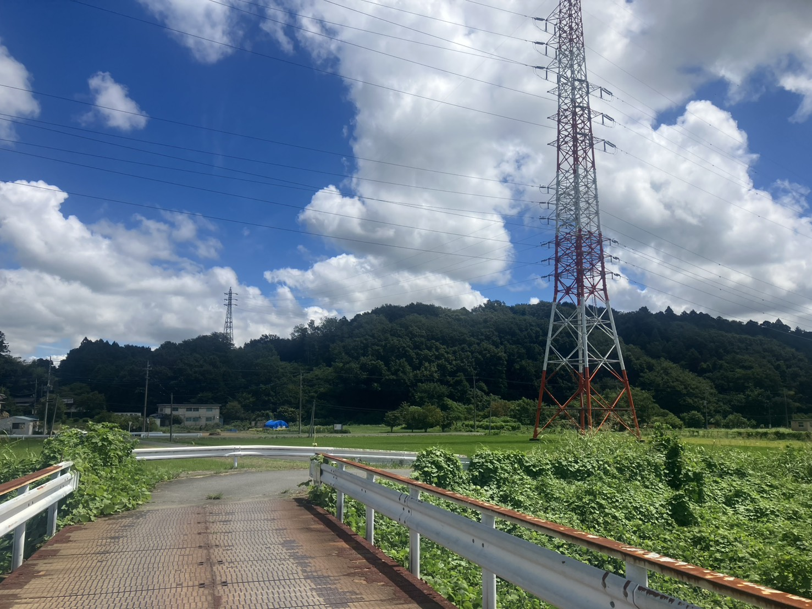
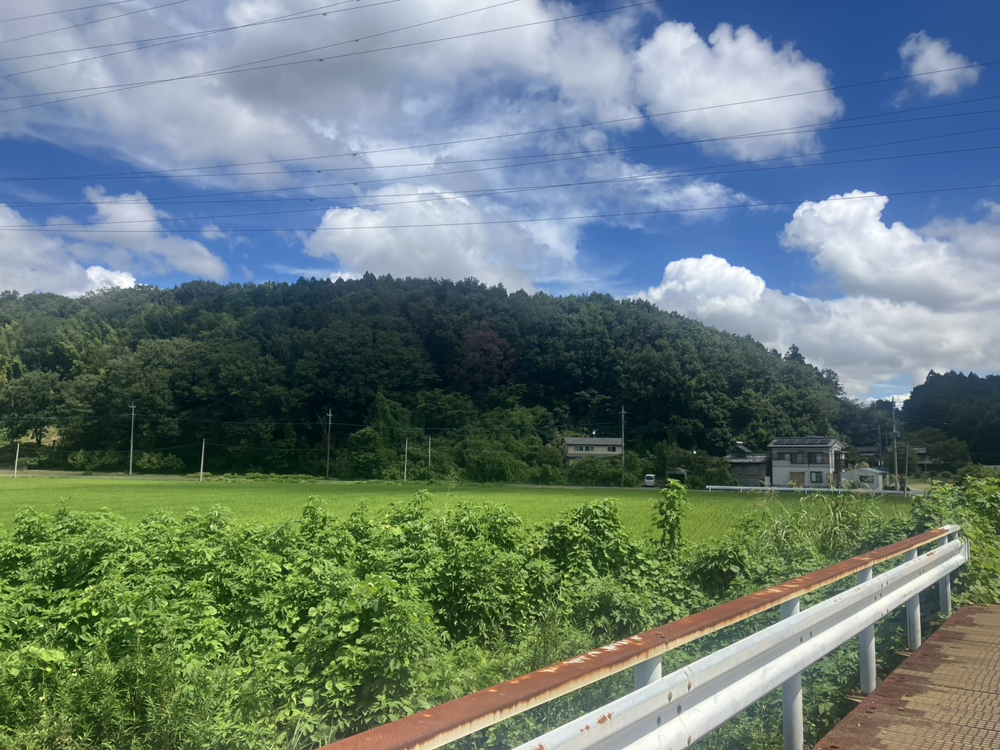

秋の兆し ── 小川町の、八月十五日
台風が抜けた翌朝、いつもの散歩道を歩いた。橋の上に立つと、市ノ川が濁っていた。普段は底の石が見えるほどの流れが、茶色く重たい水になって、音を立てて下っていく。ほんの数日前まで、静かな川だったはずである。

顔を上げれば、空はもう嘘のように晴れている。ただ、雲の輪郭が、少し前とは変わったように思う。真夏の入道雲は空の低いところで沸き立っていたが、この日の雲は、ずいぶん高いところを流れていた。夕方には、どこかでひぐらしが鳴いていた。
八月十五日である。まだ暑い。それでも、秋はもう、山のほうから降りてきている。

一、備えという、報われにくい仕事
今月の敬天新聞（令和八年八月号）に、「酷暑時代 国の備えは万全か」という見出しがあった。本文はまだ載っていない。鋭意調査中とのことである。
備えというのは、つくづく報われにくいものだと思う。うまくいけば何も起きず、何も起きなければ、備えた事実そのものが誰の記憶にも残らない。そして事が起きたときにだけ、なぜやっていなかったのかと問われる。護岸も、堤防も、避難の段取りも、みなその性格を持っている。
同じ号には、熊の被害をめぐる議論も載っていた。読者から「御託を並べず今すぐ頭数を元に戻せ」という強い意見が寄せられ、編集部はそれに応えて、人命が最優先であることを認めたうえで、こう書いていた。人間は山を削り、森を変え、自然を都合よく作り替えてきた。その結果が今日の事態であるならば、これは獣害というより、人間の驕りに対する自然からの警鐘ではないか、と。
濁った川を眺めながら、この一節を思い出した。私たちは自然を制御しているつもりでいるが、実際には、機嫌のいい日に通してもらっているだけなのかもしれない。

二、子ヤギが生まれていた
散歩コースの途中に、ヤギを飼っているお宅がある。いつも柵の内側からこちらを見ている、顔なじみのヤギである。
その日、様子が違った。小さいのがいる。どうやら子が生まれたらしい。
親のそばを離れず、覚束ない足でついて回っている。台風が来ようが、遠い国で戦争が起きていようが、この生き物たちは餌を食べ、子を産み、育てている。それだけのことなのだが、しばらく足が止まった。
平和というのは、たぶんこういう風景のことを言うのだと思う。何も起きないということ。子が無事に生まれ、無事に育つということ。書いてしまえば当たり前すぎて、標語にもならない。
三、あの数時間、機体の中で
もう数十年前になるが、靖国神社に併設されている遊就館を訪れたことがある。特攻に発つ前の若者たちが、身内に宛てて書いた遺書が収められていた。
読み進めるのが、途中から苦しくなった。文章は驚くほど静かで、取り乱してもいなければ、恨み言も書いていない。両親への感謝と、詫びと、先立つことへの断りが、整った字で綴られている。二十歳前後の人間が書いたものである。
自分にも子がいて、親がいる。だから余計にいたたまれなかった。これを書いた側の気持ちも、受け取った側の気持ちも、想像しようとしただけで足がすくむ。
あれから折にふれて考えるのは、遺書そのものよりも、書き終えたあとの時間のことである。
飛び立ってから、目標に到達するまでには、数時間があったという。その間、機体の中で、彼らは何を見ていたのだろうか。晴れた朝の、きれいな日の出。眼下に広がる、静かな大海原。皮肉なほど美しかったはずである。
その数時間、二十歳の人間は、何を思っていたのだろうか。
知る由もない。誰も帰ってこなかったのだから、それを聞き取ることは、もう永久にできない。私たちに残されたのは、飛び立つ前に書かれた紙だけである。書かれなかった数時間の方が、たぶん、はるかに長い。
四、出撃できなかった人
身内に、医療に携わっている者がいる。先月、こんな話を聞いた。
入院されていた患者さんの中に、かつて特攻を志願しながら、出撃の前に終戦を迎えた年配の方がいらしたという。
それを聞いたとき、私は率直に、運がよかったのだ、と思った。生き延びられたのだから、それ以上に良いことはない。八十一年の人生が、そこから始まったのである。
しかし、ご本人はそうではなかったらしい。奥様には、生涯にわたって、同じことを語り続けていたそうだ。自分は出撃できなかった、という負い目。国が求めたときに、自分だけが飛べなかったという思い。そして、先に発っていった仲間たちを失った悲しみ。
正直に書く。私には、この気持ちが分からない。
生きて帰れたのなら、それでいいではないか、と思ってしまう。誰があなたを責めるものか、とも思う。しかし、その方にとっては、八十年かけても消えなかった何かが、そこにあったのである。分からない、と書くことしか、私にはできない。申し訳ないが、それが正直なところである。
ただ、ひとつだけ思うことがある。
戦後、焼け野原からこの国を立て直し、世界の一位を数多く並べるまでの企業を育てたのは、まさにその世代の人たちであった。異常な働き方だったと、今なら言われるだろう。実際、そうだったのかもしれない。
だが、あの世代の何人かが、「自分だけが生き残ってしまった」という負い目を抱えたまま働いていたのだとしたら。その切磋琢磨の底にあったものは、私たちが考える「意欲」や「野心」とは、まるで違う質のものだったのではないか。
先に発った仲間の分まで、という言い方がある。使い古された言葉である。しかし、それを本当に一生かけて背負った人が、確かにいたのだろう。病室で、奥様にだけ、それを話していた。そういう静かな話である。
五、それでも、議論は封じるべきではないと思う
そのうえで、私はこう思う。八月号の「社主のブログ」に、こういう一節があった。
何で国防や憲法改正を主張すれば「戦争に突き進んでいる」という認識になるのだろうか？
戦争は嫌だ。二度とあってはならない。その一点に異論はない。だが、「二度とあってはならない」という結論と、「そのために何をすべきか」という手段の議論は、本来は別のはずである。ところが日本では、手段を口にした途端に、結論の方まで疑われてしまうところがある。憲法第九条の話を持ち出せば、それだけで戦争をしたがっている人間のように扱われる。
九条があるから戦後八十一年間、日本は戦火を免れてきたのだ、という考え方がある。一方で、免れてきたのは別の要因によるのであって、九条はそれを説明していない、という見方もある。私はどちらが正しいのか、断じるだけの知識を持たない。
ただ、確かなことがひとつある。攻め込む側は、こちらの憲法を読んではくれないということだ。
歴史を見れば、侵略にはたいてい大義が用意されてきた。自国民の保護、歴史的な領有権、脅威の除去──どれも当事国にとっては筋の通った理屈である。理不尽な大義であっても、掲げる側は本気で掲げる。ならば、こちらが平和を望んでいるという事実だけで、それが止まるものだろうか。
まして今は、核を持つ国のふるまいが、以前ほど予測できなくなっている。同じ号の「強者の論理」には、ロシアが兵員を募るために巨額の債務免除まで持ち出していること、プーチン氏が国際裁判所から戦争犯罪人として指名手配されていること、そしてアメリカが国連から脱退を表明し、国際機関の機能が麻痺し始めていることが書かれていた。
戦後の秩序を支えてきた枠組みが、静かに緩んでいる。その中で、抑止という言葉を口にすることさえためらわれる空気は、果たして私たちを守ってくれるのだろうか。
議論した結果として「やはり今のままでよい」という結論に至るなら、それは立派な選択である。私が危ういと思うのは、議論そのものを始めないことの方だ。考えないでいることと、平和を守ることは、同じではない。
あの機体の中の数時間を、二度と誰にも過ごさせないために何が要るのか。感情ではなく、頭で考えたい。
六、遠い戦争が、台所に届く
中東情勢は落ち着く気配がない。イランへの攻撃があり、その余波はいまも続いている。そして、それは遠い出来事のままでは終わらない。原油が上がり、輸送費が上がり、電気代が上がり、店頭の値札が上がる。
これは、弊社の仕事でも肌で感じていることである。ポリエチレン管の価格が急騰した。運搬費も上がった。もとをたどれば原油から生まれる材料であり、原油を燃やして運ぶものだから、当然といえば当然の話ではある。それでも、見積書に並ぶ数字が地球の裏側の情勢で動いていくというのは、以前はあまり考えもしなかったことである。
戦争の爪痕、と言っては大げさかもしれない。ミサイルが飛んでくるわけでも、街が焼けるわけでもない。それでも、遠い国で上がった火の手は、確実にこの町の一枚の見積書にまで届いている。世界はもう、そういうふうに繋がってしまっている。
七、小川町の、平和
スイカが食べたければ、小川町のマーケットに行けばいい。物価が上がったとはいえ、金さえ払えば、満足するまで食べられる。
それが、この町の平和である。書いてみると、ずいぶん散文的な話だ。しかし、八十一年前の八月に、この当たり前がどれほど遠かったかを思えば、散文的であることそれ自体が、たいへんな達成なのだと思う。
その夕方、近所の方がスイカを持ってきてくださった。八十近いご婦人である。
おぼつかない足取りで、意外なほど大きなスイカを、徒歩で運んでこられた。両手で抱えるようにして、ゆっくりと。恐縮しながら受け取ったが、正直、ありがたいという言葉しか出てこなかった。
受け取ってから、ふと考えた。あの世代にとって、スイカとはどういう果物だったのだろうか。戦後まもない日本で、これは相当に貴重なものだったに違いない。滅多に口に入らず、手に入れば家族で切り分けて、種まで惜しんで食べたのではないか。その記憶を持っている方が、それを人に贈るという行為に込めている重みは、店で買える私たちの感覚とは、たぶん少し違う。

包丁を入れると、いい音がした。赤い実が、思った以上に赤かった。
これである、と思った。
今日、この町で空襲警報が鳴ることはない。子どもが遺書を書かされることもない。二十歳の若者が、晴れた朝の海の上を、片道の燃料で飛ぶこともない。川は増水したが、翌日には青空が戻り、ヤギには子が生まれ、八十を過ぎたご婦人が重いスイカを抱えて歩いてきてくださる。
八十一年前、あの手紙を書いた若者たちが願ったのは、たぶん、こういう日常だったのではないか。そして、飛べずに生き残ったことを八十年悔い続けた方が、その手で作り上げたのも、たぶん、この日常だったのではないか。
日が、少し短くなった。夕方の風に、もう夏の重さがない。稲は穂を垂れ始め、じきに刈り入れである。今年もまた、何事もなく秋が来る。
この当たり前を次の三十年も続けるために何が要るのかを、恐れずに、しかし勇ましくもならずに、考えていきたいと思う。
戦没者の御霊に、心より哀悼の意を表します。